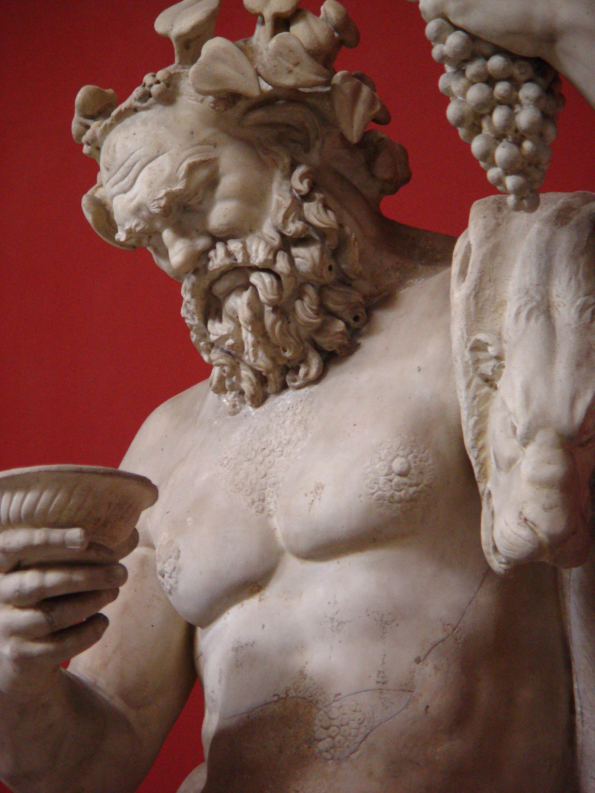
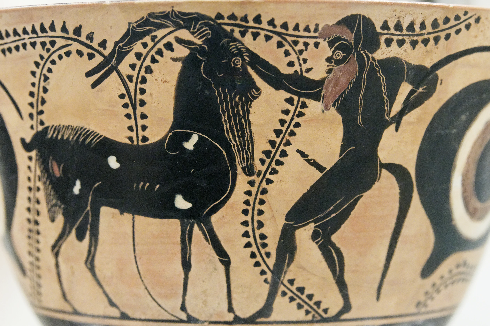

Vol. 1: Mitologia Griega
Satyr
Los sátiros son divinidades menores o genios de la naturaleza en la mitología griega, representantes de la fertilidad, el desenfreno, el vino y el deseo sexual masculino desmedido. Acompañantes habituales del dios Dioniso, vagaban por bosques y montañas, caracterizándose por ser mitad hombre y mitad bestia (cola/orejas de caballo inicialmente, luego patas/cuernos de cabra).


En la mitología griega, no existe una única "contraparte" directa del sátiro en términos de enemigo mortal, sino más bien figuras que actúan como contrapartes funcionales, sus contrapartes femeninas, o sus equivalentes en la mitología romana.